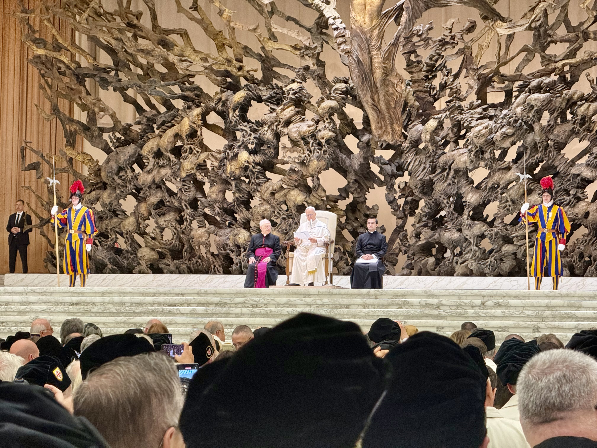

Vatican · 23 Oct. 2025Pope Leo XIV renews the mission of the Order of the Holy Sepulchre
More than 3,600 Knights and Dames from around the world, including the Luxembourg delegation led by Lieutenant Jacques Klein, were received in audience by the Holy Father at the close of the Order's Jubilee pilgrimage to Rome.
Read the article →